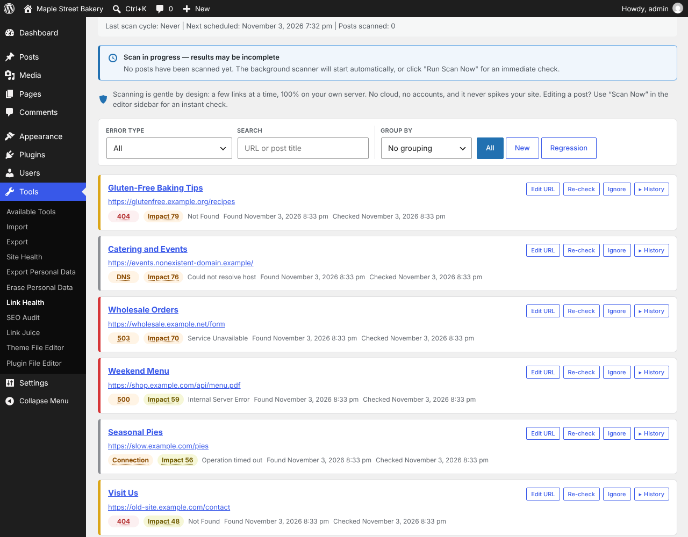

Free WordPress plugin
Linkvane – Link Checker & Internal Links
Linkvane is a broken link checker for WordPress. It finds broken links and dead links (404 errors, dead pages, bad anchors, SSL and DNS failures) in your…
Install from wordpress.org Support forum Try it in WordPress Playground

What it does
Linkvane is a broken link checker for WordPress. It finds broken links and dead links (404 errors, dead pages, bad anchors, SSL and DNS failures) in your content, shows orphan pages, and maps how your own pages link to each other (internal linking). Everything runs on your own server and is stored in your own WordPress database; you do not need an account or an API key.
Try it in your browser with WordPress Playground, no install needed.
A link is reported as broken only after it has failed several probes spaced out over time, so a server that is briefly down, a rate limit or a bot challenge (HTTP 429, 403, 999) is not reported as a broken link.
Highlights
- Scans posts and pages out of the box; optionally custom post types, media, approved comments and navigation menus.
- Works in small background batches through WP-Cron (5 posts every 15 minutes by default, both adjustable), using a HEAD request with a GET fallback.
- Reads your content with WP_HTML_Tag_Processor , the HTML parser built into WordPress, and uses the same parser to correct a URL in place.
- Dashboard with status codes, affected content, and grouping by domain or error type (4xx, 5xx, DNS, SSL, timeout, missing anchor).
- Validates #anchor links against the target page and clears the warning once the anchor exists.
- Re-check a link on demand, export the list as CSV, or set rules that rewrite known bad domains during scans.
- Builds a map of the links between your own pages and computes a PageRank-style authority score for each page. This step makes no HTTP requests.
Details
- Version
- 1.7.4
- Requires WordPress
- 6.2
- Tested up to
- 7.1.4
- Requires PHP
- 8.0